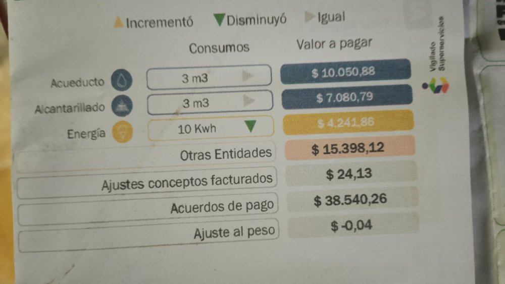

1. Factura de energía del hogar
La imagen muestra el resumen de los conceptos facturados, con un consumo de energía de 10 kWh y un valor de $4.241,86.

2. Datos de la factura
| Concepto | Consumo | Valor (COP) |
|---|---|---|
| Acueducto | 3 m³ | $10.050,88 |
| Alcantarillado | 3 m³ | $7.080,79 |
| Energía | 10 kWh | $4.241,86 |
| Otras entidades | No aplica | $15.398,12 |
| Ajustes conceptos facturados | No aplica | $24,13 |
| Acuerdos de pago | No aplica | $38.540,26 |
| Ajuste al peso | No aplica | -$0,04 |
Historial de consumo de energía
| Mes | Consumo (kWh) | Valor pagado por energía (COP) |
|---|---|---|
| Periodo de la factura | 10 | $4.241,86 |
3. Comparación con la proyección de los equipos
La proyección de los equipos en Mis equipos es de 11,525 kWh por semana, unos 49,39 kWh por mes. La factura registra 10 kWh, o sea, la proyección es unas 4.9 veces mayor.
La diferencia se explica porque: (1) la nevera sola gasta 34,7 kWh/mes según su etiqueta, más que todo el consumo facturado, lo que sugiere que el periodo facturado fue más corto que un mes o que la nevera gasta menos que la etiqueta; (2) las horas de uso son aproximadas; y (3) las etiquetas miden condiciones de prueba y no el uso real.
La tarifa de referencia es de $424,19 COP/kWh (4.241,86 ÷ 10), que puede ser baja por subsidios aplicados a la vivienda.
4. Recomendaciones para la familia Ahorro
- La nevera es el equipo que más energía gasta (34,7 kWh/mes) mantenerla cerrada, con empaques en buen estado y alejada de fuentes de calor.
- Usar la lavadora solo con carga completa su etiqueta indica 4 kWh/mes para 14 ciclos.
- Desconectar la sanduchera y la waflera después de usarlas y agrupar su uso para calentar menos veces.
- Como el precio subió de 124 a 942 COP/kWh entre febrero y agosto, revisar cada mes el consumo de la factura para detectar aumentos.